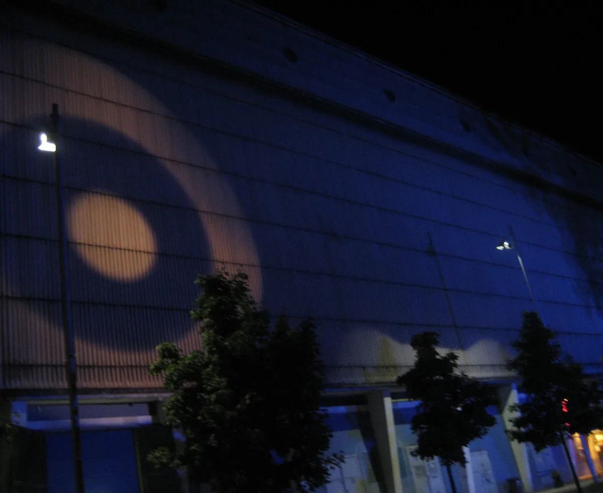
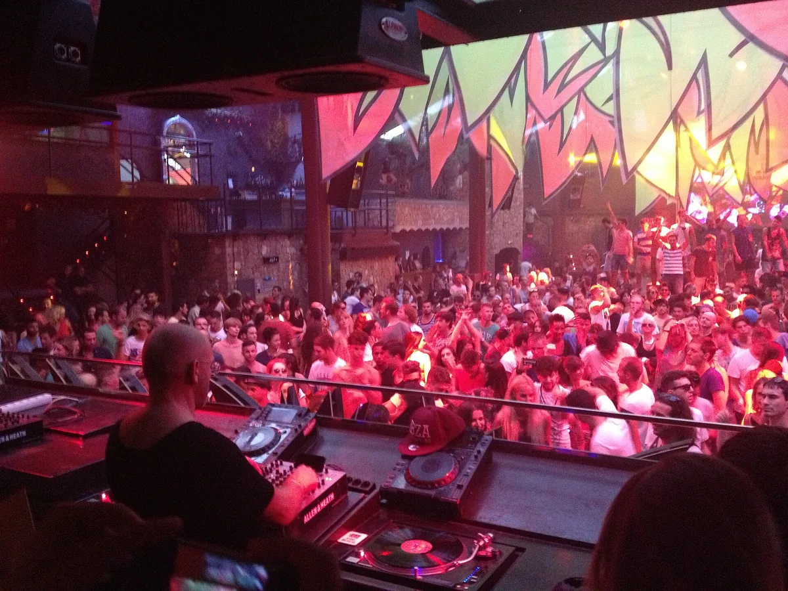
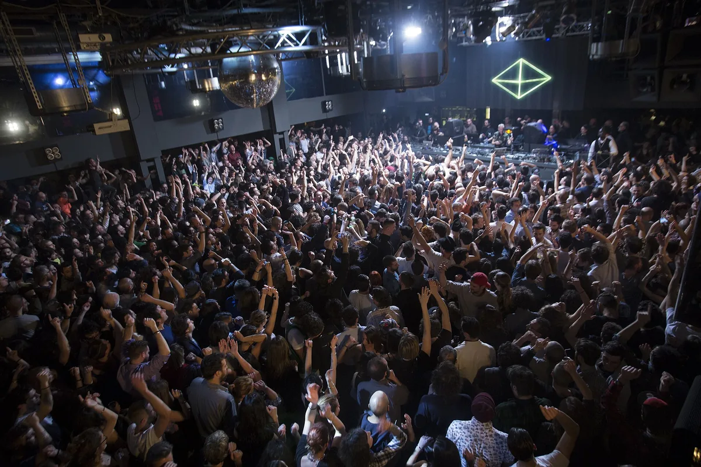
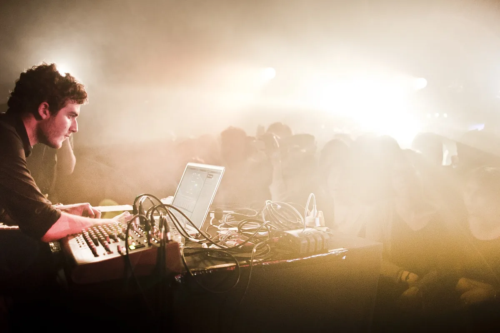
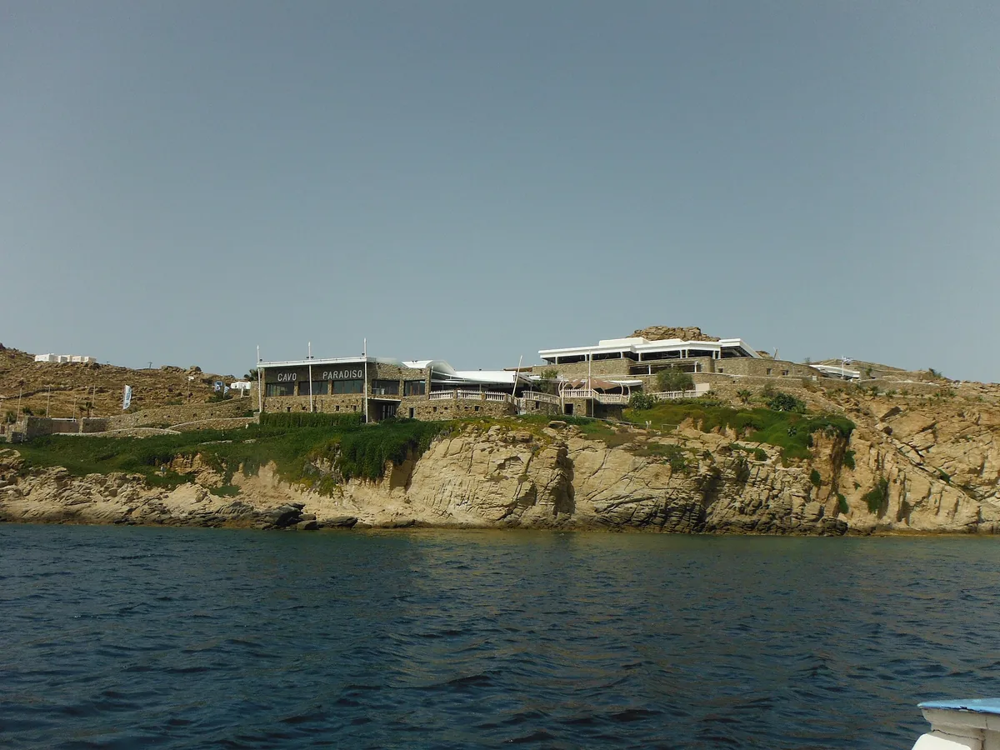
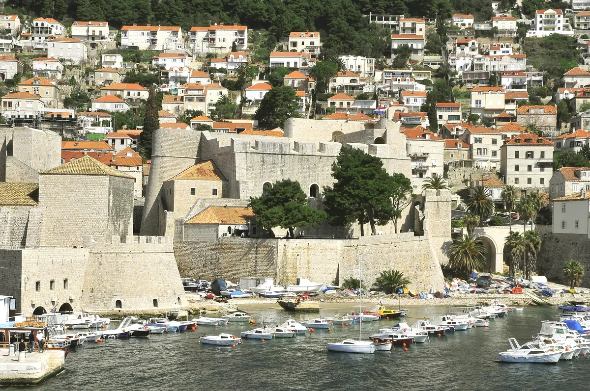

Club guide, Europe
Best clubs in Europe: 23 nightclubs worth the trip
Twenty-three European clubs in ten countries, from Berghain and Tresor to Pacha and Cavo Paradiso, with what each room is and the sets to hear.
Choosing among 23 rooms.
A list of the best nightclubs in Europe has to choose what to measure. This guide sorts 23 rooms by country, because a trip is usually planned by country before it is planned by club.
The selection starts from DJ Mag's 2026 poll and adds rooms with a documented history that the poll leaves out or ranks lower. Nothing here is a verdict on a single "best". For a city-first view, the best clubbing cities in Europe guide covers where to base yourself, and the single-club guides on Berghain, fabric and Pacha Ibiza go deeper on three of the rooms below.
Best nightclubs in Europe
The table lists all 23 clubs in this guide with the city, country and the fact that earned each one a place. Capacities are the figures DJ Mag or the club's own press gives, and they vary by source.
| Club | City | Country | Why it is here |
|---|---|---|---|
| BerghainGoogle MapsResident Advisor | Berlin | Germany | Former power station, open as a club since 2004 |
| TresorGoogle MapsResident Advisor | Berlin | Germany | Opened 1991 in a department store vault |
| BootshausGoogle MapsResident Advisor | Cologne | Germany | DJ Mag No. 11, three rooms by the Rhine |
| Open GroundGoogle MapsResident Advisor | Wuppertal | Germany | 800 capacity in a former bunker, DJ Mag new entry |
| Hï IbizaGoogle MapsResident Advisor | Ibiza | Spain | DJ Mag No. 4, four-time winner |
| [UNVRS]Google MapsResident Advisor | Ibiza | Spain | DJ Mag No. 1, opened May 2025 |
| Pacha IbizaGoogle MapsResident Advisor | Ibiza | Spain | Open since 1973 |
| AmnesiaGoogle MapsResident Advisor | Ibiza | Spain | Open since 1976, 50th year in 2026 |
| DC-10Google MapsResident Advisor | Ibiza | Spain | Home of Circoloco since 1999 |
| FABRIKGoogle MapsResident Advisor | Madrid region | Spain | DJ Mag No. 8, seven areas |
| fabricGoogle MapsResident Advisor | London | UK | Three rooms, reopened in 2016 |
| The Warehouse ProjectGoogle MapsResident Advisor | Manchester | UK | DJ Mag No. 15, a phone-free season |
| Ministry of SoundGoogle MapsResident Advisor | London | UK | DJ Mag No. 24, 35th year |
| DrumshedsGoogle MapsResident Advisor | London | UK | 15,000 capacity in a former IKEA store |
| Space RiccioneGoogle MapsResident Advisor | Riccione | Italy | Open-air, carries the name of Ibiza's Space |
| TenaxGoogle MapsResident Advisor | Florence | Italy | Founded 1981, capacity 999 |
| Rex ClubGoogle MapsResident Advisor | Paris | France | One room under a cinema since the 1930s |
| Amnesia Cap d'AgdeGoogle MapsResident Advisor | Cap d'Agde | France | Open-air, expanded to 4,000 |
| Lux FrágilGoogle MapsResident Advisor | Lisbon | Portugal | On the River Tagus since 1998 |
| Cavo ParadisoGoogle MapsResident Advisor | Mykonos | Greece | Cliff-top club open since 1993 |
| Culture Club RevelinGoogle MapsResident Advisor | Dubrovnik | Croatia | Inside a fortress |
| ShelterGoogle MapsResident Advisor | Amsterdam | Netherlands | Two Funktion-One rooms, no phones |
| Prozak 2.0Google MapsResident Advisor | Kraków | Poland | Underground rooms on two levels |
Two caveats. DJ Mag ranks clubs on a public vote, so it measures popularity, which is a fair guide to where crowds go and a poor guide to which sound system is best. And the list leaves out hundreds of excellent smaller rooms. The city guides for Amsterdam, Barcelona, Berlin, Budapest, Bristol, Lisbon, Manchester, Paris and Prague cover the smaller rooms the poll misses.
Best dance clubs in Europe, by country
These are the best dance clubs in Europe grouped by where they are.
Best clubs in Germany
Berghain is in Friedrichshain, in a former East German power station on Am Wriezener Bahnhof. The Berliner Zentrum Industriekultur dates the building to 1952 to 1955 and gives the main floor ceilings of 18 metres and a capacity of up to 1,500. The club has run there since 2004, and Panorama Bar sits in the former control room. The Klubnacht starts at 23:59 on Saturday, entry is 18 and over, and the club publishes no dress code and no queue times. In 2023 Mixmag reported that the original Funktion-One Dance Stack, installed in 2005, was being replaced after 18 years. DJ Mag ranks it No. 21. The Berghain guide has the door policy, the history before 2004 and the sound system.
Tresor is the other Berlin name. The Tresor Foundation's history page says the club opened in 1991 in the vault of the former Wertheim department store, on the strip where the Berlin Wall had stood. After the move in 2005 it reopened in 2007 in the basement of the Mitte power station on Köpenicker Strasse, now called Kraftwerk Berlin. The same page records the foundation's creation in 2021 and the recognition of Berlin club culture by UNESCO in 2024.

Bootshaus in Cologne is DJ Mag No. 11 in 2026 and was in its 21st year. DJ Mag lists a capacity of 2,000 and describes the club in a shipyard on the Rhine, with three rooms: the Mainfloor, BLCKBX and the Dreherei.
Open Ground in Wuppertal is the smallest room in this guide and entered DJ Mag's list at No. 100 in 2026. It opened in 2023 in a former Second World War bunker near the central station. DJ Mag says it was founded by Markus Riedel, who previously worked at the Berlin record shop Hard Wax, with Mark Ernestus consulting. The sound system is a custom Funktion-One build, the capacity is 800, and the licence runs round the clock.
Best clubs in Spain
Spain has 12 clubs in DJ Mag's 2026 list, the second-most of any country, and three of them are new entries. Six are in this guide.
Hï Ibiza is DJ Mag No. 4. The club's own site counts four wins in a row, from 2022 to 2025. It stands on Playa d'en Bossa, is run by The Night League, and DJ Mag gives a capacity of 5,633 across the Theatre, the Club Room, the Wild Corner, Magic and the Secret Gardens.
[UNVRS] is DJ Mag's No. 1 in 2026. DJ Mag's article says it took over the former Ku Club and Privilege site on the island and became the first club to reach first place within twelve months of opening. It opened on 30 May 2025. Sources differ on its capacity, so this guide gives none.
Pacha Ibiza opened in June 1973, started by Ricardo Urgell and his brother Piti in a finca outside Ibiza Town. It has a Main Room, a Funky Room and a Roof Terrace, is open to guests aged 18 and over from 11pm, and is DJ Mag No. 18. The Pacha Ibiza guide has tickets, the dress code and the 2026 closing week.
Amnesia first opened in 1976, in what had been a finca, and DJ Mag links its early years to DJ Alfredo and the Balearic beat. It marks 50 years in 2026, holds 3,800 according to DJ Mag, and ranks No. 16.

DC-10 stands near the airport and was opened by Sito and Deogracias Lara in 1989. Gray Area records that the first Circoloco party was held in July 1999, free, with about 80 people on the terrace. DJ Mag lists a capacity of 1,500 and a no-phones policy, and ranks it No. 19.
FABRIK is in Humanes, in the Madrid region, and is DJ Mag No. 8. It was established in 2003, holds 6,000 across seven areas and has a hotel on site. DJ Mag's profile also names two festivals tied to the venue, Nexus and CODE SUMMER FESTIVAL.
Three of the Spanish rooms have sets in the catalogue, and the two below were recorded at Hï and Pacha.
Best clubs in the UK
DJ Mag's article notes that the UK ranks fifth by country in 2026 and has no club in the top 10 for the first time since 2016. Four British rooms are here.
fabric has been at 77a Charterhouse Street in Farringdon since 1999, in a former meat storage cellar. It has three rooms and was founded by Keith Reilly and Cameron Leslie. Islington Council revoked its licence on 7 September 2016, an agreement was reached on 21 November, and it reopened on 2 December 2016. Entry is 18 and over with photo ID. DJ Mag ranks it No. 13. The fabric guide has the dress code and the closure.
The Warehouse Project in Manchester is DJ Mag No. 15, in its 20th year in 2026. It runs at Depot Mayfield, holds 10,000 and is phone-free. The Manchester clubs guide has the other rooms in that city.
Ministry of Sound is in London, in its 35th year according to DJ Mag, with a capacity of 1,600. DJ Mag highlights The Box, which runs on a KV2 sound system, and ranks the club No. 24. The London electronic music clubs guide covers it alongside the smaller rooms.
Drumsheds is a former IKEA store in north London run by Broadwick Live since 2023. DJ Mag gives a capacity of 15,000, three rooms called X, Y and Z, and a d&b audiotechnik sound system. It rose 24 places to No. 45.
Two sets from the catalogue show the rooms in action: one from fabric, one from Ministry of Sound.
Best clubs in Italy
Italy has seven clubs in the 2026 list. Two are here.
Space Riccione is on the Adriatic coast. DJ Mag lists a capacity of 6,000, and the club has operated open-air since 2023 as a continuation of Ibiza's Space, with the Arena, Garden, Terrace and Lounge. It rose nine places to No. 26.
Tenax in Florence was founded in 1981 and moved toward dance acts in the 1990s, DJ Mag says. Capacity is 999. It rose eight places to No. 89.

Best clubs in France
Rex Club is at 5 boulevard Poissonnière in Paris. DJ Mag's 2022 profile says it began in the 1930s as the underground space of the Grand Rex cinema, went through disco in the 1970s and, with acid house in the late 1980s, launched Laurent Garnier. Visit Paris Region puts the first electronic night in 1988, with Garnier playing as DJ Ramon. It has one room, a capacity of 800 and a d&b audiotechnik system. Opening hours on the tourist board's page are Wednesday to Saturday, 23:55 to 7:00. The Paris clubs guide covers the city's other rooms.

Amnesia Cap d'Agde is an open-air club on the south coast of France, up five places to No. 33. DJ Mag says capacity was expanded from 3,000 to 4,000, with L-Acoustics sound, 40 suspended hexagonal screens and a new VIP backstage area.
Best clubs in Portugal
Lux Frágil in Lisbon sits on the River Tagus and launched in 1998. DJ Mag's 2021 profile gives a capacity of 1,500, a club space with a bar and a terrace, and guests such as Jeff Mills and Kerri Chandler. The Lisbon clubs guide covers the city's scene. This profile is five years old, so check the club's current programme.
Best clubs in Greece
Cavo Paradiso in Mykonos has been open since 1993 on a cliff about 100 feet above the Aegean, with Funktion-One sound and a renovation in 2010. DJ Mag gives a capacity of 3,000 and ranks it No. 22.

Best clubs in Croatia
Culture Club Revelin in Dubrovnik is built inside the walls of the Revelin Fortress. DJ Mag lists a capacity of 1,500, a ceiling-wide screen layout and reprogrammed lighting, and 2025 highlights including Green Velvet, MK and Nicole Moudaber. It fell two places to No. 25.

Best clubs in the Netherlands
Shelter is below the A'DAM Tower in Amsterdam Noord. DJ Mag lists a capacity of 1,000, two Funktion-One rooms called the Club and the Restroom, and a no-phones policy. It re-entered the list at No. 90. The Amsterdam clubs guide covers the city.
Best clubs in Poland
Prozak 2.0 is at Plac Dominikański 6 in Kraków. In Your Pocket describes underground rooms on two levels with four bars and three dance floors, and a strong sound system, open Wednesday to Saturday. The club is not in DJ Mag's 2026 list, and this is the thinnest-documented entry here.
Top clubs in Europe by size
Another way to pick is by size. Capacities are as DJ Mag lists them.
| Club | Listed capacity |
|---|---|
| Drumsheds, LondonGoogle MapsResident Advisor | 15,000 |
| The Warehouse Project, ManchesterGoogle MapsResident Advisor | 10,000 |
| FABRIK, Madrid regionGoogle MapsResident Advisor | 6,000 |
| Space RiccioneGoogle MapsResident Advisor | 6,000 |
| Hï IbizaGoogle MapsResident Advisor | 5,633 |
| Amnesia Cap d'AgdeGoogle MapsResident Advisor | 4,000 |
| Amnesia, IbizaGoogle MapsResident Advisor | 3,800 |
| Cavo ParadisoGoogle MapsResident Advisor | 3,000 |
| BootshausGoogle MapsResident Advisor | 2,000 |
| Rex ClubGoogle MapsResident Advisor | 800 |
The top clubs in Europe by size are Drumsheds, The Warehouse Project, FABRIK and Space Riccione. At the other end are Open Ground and Rex Club at 800, Tenax at 999 and Shelter at 1,000.
Europe clubs: entry, phones and age
Policies differ more than the clubs' reputations suggest.
- Age. Berghain, fabric and Pacha all state 18 and over.
- Phones. DJ Mag lists no-phones policies at DC-10 and Shelter, and calls The Warehouse Project phone-free.
- Dress code. Pacha publishes a written code that bans beachwear, flip flops, vests and bare torsos. fabric's code bans business suits, flags and glow wear. Berghain publishes none.
- Opening times. Pacha opens from 11pm, Berghain's Klubnacht starts at 23:59 on Saturday, and Rex Club opens at 23:55, Wednesday to Saturday.
- Tickets. fabric sells through Resident Advisor. Pacha sells through its own site.
Check each club's own page for the night you plan to attend, because policies and prices change by event.
DJ Mag Top 100 Clubs 2026: which European clubs are on it
DJ Mag published the Top 100 Clubs 2026 on 15 April 2026. Its article counts 19 new entries, 39.5 European clubs in the 100 (up one on the year), seven from Italy and 12 from Spain. The table lists the European entries confirmed on DJ Mag's profile pages and the ranks read from its list on 4 October 2026.
The table shows a selection of European clubs from the poll.
Best techno clubs
DJ Mag's poll does not split by genre, so the best techno clubs in this guide are picked by what each source says about the room.
Berghain has its own guide with the door policy. Tresor opened in 1991 in a department store vault and now sits in a power station basement, and its own foundation keeps the history. Open Ground in Wuppertal is a recent addition built around a custom Funktion-One system, and its founder came from Hard Wax. Rex Club in Paris moved from disco to acid house in the late 1980s.
For the sound of Tresor, the catalogue has a radio guide from NTS to the club's classics. It was not recorded at the club, so it is a listening guide and not a record of a night.
Best clubs in Europe FAQ.
What are the best clubs in the world?
DJ Mag's Top 100 Clubs 2026 puts [UNVRS] in Ibiza first, Greenvalley second, Ushuaïa Ibiza third, Hï Ibiza fourth and Savaya fifth. The same poll is the usual answer to the best nightclubs in the world. This guide stays in Europe, so the clubs above are the European ones.
What are the best techno clubs in the world?
DJ Mag's list has no techno category, so no ranked answer exists. For Europe, the techno section above names Berghain, Tresor, Open Ground and Rex Club, with the reasons.
Which European club is ranked highest?
[UNVRS] in Ibiza, at No. 1 in DJ Mag's Top 100 Clubs 2026, followed in Europe by Ushuaïa Ibiza at No. 3 and Hï Ibiza at No. 4.
How old do you have to be to enter Berghain, fabric or Pacha?
All three state 18 and over.
Which European clubs ban phones?
DJ Mag lists no-phones policies at DC-10 and Shelter, and calls The Warehouse Project phone-free.
Sources.
- Rankings, capacities, openings and club profiles, read on 4 October 2026: DJ Mag Top 100 Clubs (2026 list and profile pages), the DJ Mag 2026 results article (15 April 2026), the Lux Frágil 2021 profile and the DJ Mag 2022 Rex Club profile. Ranks 63 to 100 were also checked against the ibiza1radio.com mirror of the list.
- Berghain: berghain.berlin, Berliner Zentrum Industriekultur and Mixmag on the sound system (18 October 2023).
- Tresor: Tresor Foundation history page.
- Ibiza: pacha.com, Gray Area on DC-10, DJ Mag on Amnesia's 50th year and hiibiza.com.
- fabric: fabriclondon.com, Resident Advisor (September 2016), Time Out (November 2016) and Mixmag.
- Rex Club opening hours and first electronic night: Visit Paris Region. Prozak 2.0: In Your Pocket Kraków.
Continue reading
Read next.
 Rave spots~10 min read
Rave spots~10 min readBerghain: Panorama Bar, Sound and Residents
Berghain explained: the former power station, Panorama Bar upstairs, Halle am Berghain, the Kantine, and the Ostgut Ton label.
Read article → Rave spots~11 min read
Rave spots~11 min readBest Clubs in NYC: Nightclubs for House and Techno, Then and Now
Nowadays, Basement, Public Records, Good Room and Elsewhere: the best clubs in NYC for house and techno now, and the history from the Loft to Output.
Read article → Rave spots~7 min read
Rave spots~7 min readBest Clubs in Tokyo: WOMB, Contact and the Ban on Dancing
WOMB, Contact, Vent and Circus Tokyo: the best clubs in Tokyo for house, techno and bass music, and the 68-year law against dancing that shaped them.
Read article → Rave spots~6 min read
Rave spots~6 min readBest Clubs in Budapest: A38, Instant-Fogas and Turbina
A38's converted cargo ship, the seven rooms of Instant-Fogas and Turbina's techno nights: the best clubs in Budapest now, and the ruin bars several grew out of.
Read article →